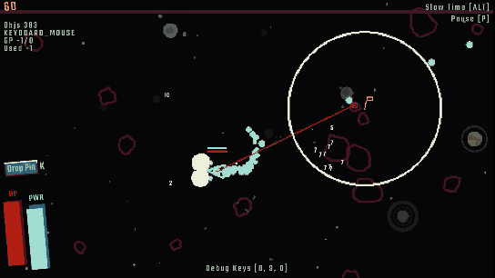
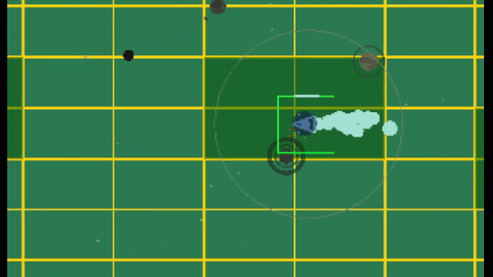

ShapeEngine
My custom-made engine based on the great Raylib Framework. The Main focus is being performant and only using draw functions instead of textures. I am using Shape Engine for my next game called Galaxy Unknown.
When using Shape Engine everything from Raylib is available as well. (Raylib Examples, Raylib Cheatsheet)
Shape Engine is available on Itch and it is a great way to support me ;)
A template repository for a basic Shape Engine Project is available here.
Demo Showcase
The demo is included in this repository. The demo is just a simple asteroid shooter like game. It consist of a main menu and 1 level with the player ship and randomly spawning asteroids. The demo tries to show the most important aspects of Shape Engine´s usage, like how to play music in a playlist, playing and adding sounds, using the data/shader/level/ui system, and many more things!
Gameplay

Spatial Hash / Collision System

Documentation
Right now there is no documentation. There is a Visual Studio Template in the Release Folder and a complete Demo Game to see how everything works.
Dependencies
Shape Engine uses the following nuget packages:
- Raylib CsLo (c# Bindings for Raylib)
- Vortice.XInput (Gamepad Vibration)
- Newtonsoft.Json (Data Handler Json Serialization/Deserialization)
Limitations
- There is no physics system because I don´t need one and would´t know how to make one. There is complete collision system but the collision response is up to you. You can also use raylibs physics system.
- The UI system is functional but not finished yet.
- To use the data system Castle DB is recommended.
History
I made Shape Engine because I wanted to help myself make games with a specific art style and certain limitations. At first, it started out with some helper scripts but now it is a relatively sophisticated system to make games with raylib. Certain parts of the basic game loop are inspired by Bytepath and other things I already used in games that I made myself (especially Fracture Hell). Feel free to use any single part if you don´t want to use the whole package. Most scripts in the globals section are self contained and can just be used to make your raylib journey a little bit easier.